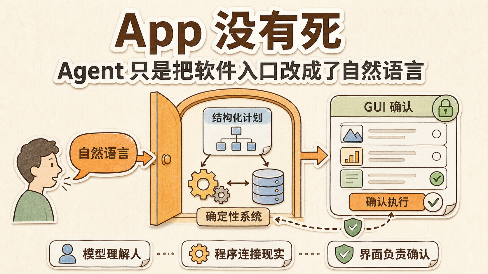
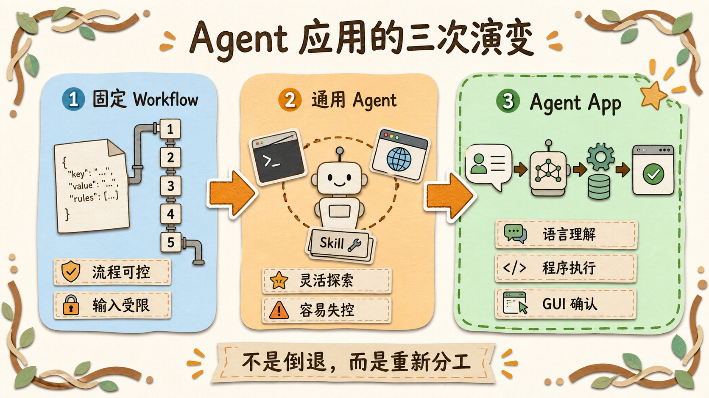
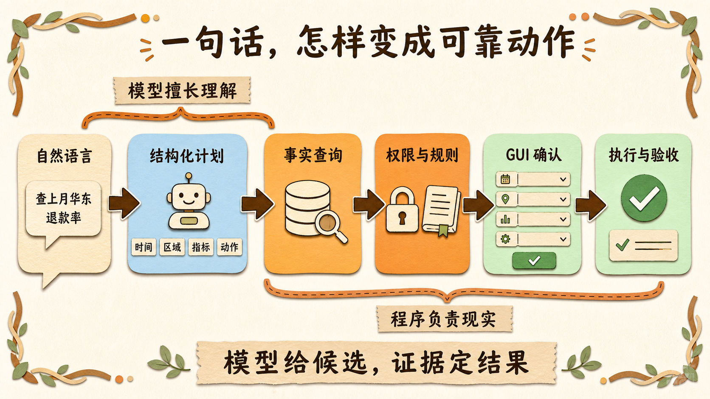
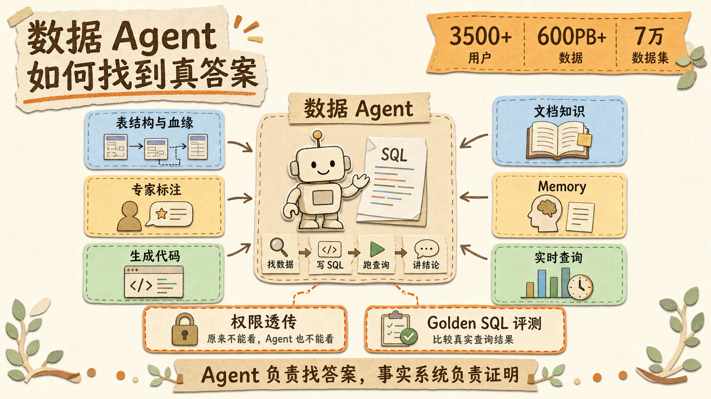
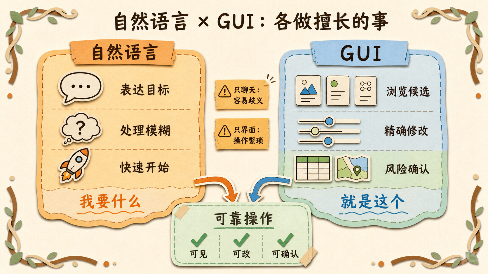
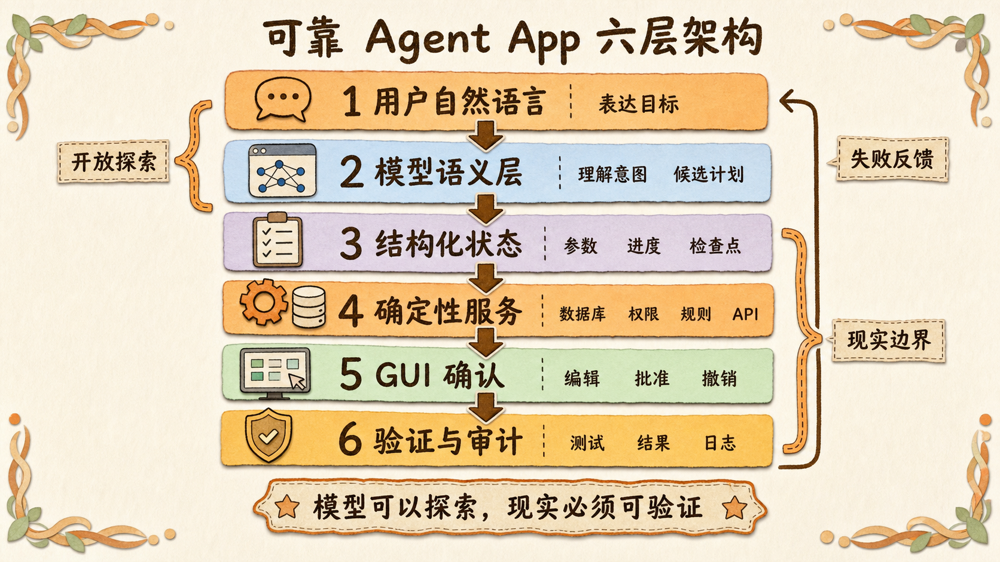
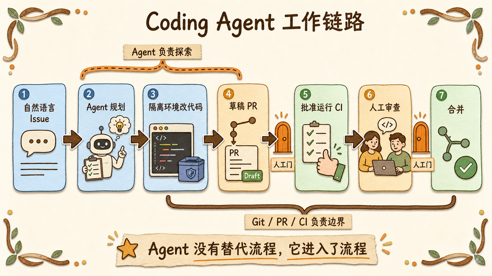

App 没有死：Agent 只是把软件入口改成了自然语言

过去两年，AI 应用经历了一次很有意思的摇摆。
最早做 Agent 时，大家还不太相信模型能自己干活。于是我们在 Dify、Coze 或自建平台里画 Workflow，把上下文一段段传下去，再想办法从模型输出里解析 JSON。
模型偶尔说错一句没关系，流程会把它拉回预先设计好的轨道。
后来 Claude Code、Codex、OpenClaw 这类产品出现了。模型会读文件、运行命令、操作浏览器，还能临时加载 Skill。很多人开始相信，只要给通用 Agent 足够多的工具和上下文，它就能接管过去由 App 完成的一切。
菜单不需要了。
表单不需要了。
甚至 App 本身也可以消失，最后只剩一个聊天框。
这个想象很诱人。说一句话，Agent 自己理解、规划、执行，我们再也不用学习软件里那些层层叠叠的按钮。
但当 Agent 真正进入数据分析、客服、财务、审批和企业协作，人们慢慢发现事情没有这么简单。
一个能调用命令行工具的 Agent，可以在开放任务里表现得非常聪明。可一个真正要给用户使用的 Agent App，还得处理账号、权限、订单状态、失败重试、数据一致性、人工审批和操作记录。
这些事情与模型会不会推理，并不是同一个问题。
所以我现在更愿意用一句不那么激进的话描述这轮变化：
App 没有死。Agent 只是把软件的入口，从“寻找功能”改成了“表达意图”。
自然语言负责告诉系统「我想做什么」。
大模型负责理解这句话，补全可能缺失的条件，并生成候选计划。
至于事实是什么、用户有没有权限、动作能不能执行、执行以后怎样恢复，依然应该由规则明确、结果可检查的程序负责。后文把这类部分统称为“确定性系统”。
这不是 Agent 的退步。
恰恰是 Agent 开始成为真正的产品。

我们为什么一度相信 App 会消失
这个判断并不荒唐。
过去的软件要求人去适应机器。用户得知道功能在哪个菜单里，表单里的每个字段是什么意思，还要按照开发者预设的顺序完成操作。
自然语言把这件事反了过来。
用户不再需要知道「区域筛选」在哪，也不必记住导出报表的五个步骤。只要说：
帮我找出上个月华东区退款率最高的三个产品，和全国平均值做个对比，确认无误后发给王总。
一句话里同时包含目标、时间、区域、指标、比较对象、验收要求和后续动作。
传统界面往往要让用户跨过多个页面。模型却能直接从语言里识别出这些意图，再决定应该查数据、计算指标、生成图表还是发送消息。
在代码场景里，这种能力更让人兴奋。
一个 Coding Agent 可以先搜索仓库，读懂相关模块，再修改代码、运行测试，根据报错继续修复。任务路径事先很难写死，模型确实比固定 Workflow 更适合临场决定下一步。
问题是，我们很容易把这种成功推广得太远。
会在代码仓库里探索，并不等于适合自由修改订单状态。
能从测试失败中恢复，也不等于应该自己决定退款金额。
代码 Agent 所处的环境其实很特殊。Git 可以保存历史，测试可以验证结果，沙箱可以隔离风险，Pull Request 还能让人类在合并之前检查修改。
它看起来很自由，背后却站着一整套确定性的工程系统。
Agent 的能力是真的。
支撑它可靠工作的传统软件，同样是真的。
理解你的意思，不等于替你决定事实
回到刚才那句报表需求。
模型很适合把自然语言变成一份结构化计划：
1 | { |
这一步解决的是语义问题。
同一句需求，用户可能说成「华东退货最严重的几个商品」「上月哪些产品退款偏高」，也可能省略年份、收件人身份或报表格式。大模型善于处理这种模糊、变化和省略。
但结构化计划出来以后，另一组问题才刚刚开始。
「上个月」按照自然月还是最近 30 天计算？
退款率的分母是付款订单、发货订单还是签收订单？
王总具体是哪一个账号？
当前用户能否查看全国数据，又是否拥有外发权限？
这些答案不能靠模型从语言习惯里猜。
它们应该来自指标平台、组织通讯录、权限服务和业务数据库。退款率要由程序按照统一口径计算，报表发出前要检查收件人和数据范围，真正发送还应经过明确确认。
可以把分工记成三句话：
| 系统部分 | 更适合负责什么 |
|---|---|
| 大模型 | 理解意图、处理模糊输入、生成候选计划、解释结果 |
| 确定性程序 | 查询事实、计算指标、检查权限、保存状态、执行动作 |
| 图形界面（GUI） | 展示候选、修改参数、比较结果、确认风险、撤销操作 |
这里的大模型不是一个无所不知的经理。
它更像一名翻译员，把人的模糊表达翻译成机器可以检查和执行的结构。
但它又不只是传统的意图分类器。面对研究、编程和故障排查，它仍然可以在受控范围里规划多步路径，根据环境反馈改变方案。
准确的定位不是「Agent 只是 UX」。
而是：在产品化系统里，Agent 应该把不确定性用在最有价值的地方。

能用程序确定的事情，不必每次都让模型猜
Anthropic 在《Building effective agents》中，把 Workflow 和 Agent 分得很清楚。
Workflow 是预先写好的代码路径。系统知道下一步要做什么，只在某些环节调用模型。
Agent 则由模型动态决定路径和工具。它适合那些步骤数量未知、执行过程中需要不断观察和调整的任务。
两者没有高低之分。
如果用户提交发票以后，系统必须依次完成格式校验、税号检查、重复报销检测和入账，这条路径很稳定。把顺序写进代码，比每次询问模型「下一步该做什么」更便宜，也更容易审计。
如果用户要求调查某次线上故障，模型可能需要查看日志、搜索代码、对比监控指标，再根据新线索改变方向。没人能提前列出所有步骤，这里才适合让 Agent 掌握更大的行动空间。
OpenAI 的 Agent 构建指南也给出了相近边界。它建议把 Agent 用在三类传统自动化比较难处理的任务中：需要细腻判断、规则和例外太多，以及大量依赖非结构化信息。
如果问题不具备这些特征，确定性方案可能已经足够。
因此，一个成熟的 Agent App 往往不是纯 Agent，也不是纯 Workflow。
它更像一条有宽有窄的河道。
需要探索的地方，让模型选择路线。
靠近权限、资金、数据修改和外部发布时，河道逐渐收窄，程序规则、人工审批和确定性验证开始接管。
微软 Copilot Studio 的设计就采用类似思路：低风险查询可以让 AI 自主编排；需要控制的步骤放进 Hybrid 层；付款、删除记录等不可逆操作，则进入严格规则或固定 Flow。
越靠近模糊意图，越适合概率模型。
越靠近现实副作用，越需要确定性。
OpenAI 自己的数据 Agent，也不是靠“记忆”回答问题
2026 年 1 月，OpenAI 公开介绍了内部数据 Agent 的架构。
这套系统服务超过 3500 名内部用户，要面对约 600 PB 数据和 7 万个数据集。员工可以直接用自然语言询问业务、产品和研究问题，Agent 会寻找数据、编写 SQL、运行查询并总结结论。
看上去，这是一个很典型的通用数据 Agent。
可真正让它能够工作的，并不是模型记住了 600 PB 数据。
OpenAI 给它搭了多层事实来源：表结构和数据血缘、历史查询、专家标注、生成数据表的代码、Slack 与文档中的组织知识、用户确认过的 Memory，以及需要时发起的实时数据仓库查询。
事实仍然存放在原来的系统里。
Agent 负责决定应该去哪里找，以及怎样把找到的信息组织成用户能理解的答案。
权限也没有交给模型自由判断。这个 Agent 继承现有数据平台的访问控制，用户原本不能看的表，通过 Agent 同样不能看。官方甚至直接把它称为运行在数据系统之上的「接口层」。
验证也没有省掉。
团队为重要分析问题准备人工编写的标准 SQL，执行模型生成的 SQL，再比较真实结果。这些评测像单元测试一样持续运行，避免 Agent 更新后悄悄改变指标口径。
这个案例很有代表性。
自然语言降低了使用数据的门槛，但数据平台没有消失。
Memory 帮助保存用户纠正过的特殊规则，但它没有取代数据库。
模型可以自由探索查询路径，但最后仍然要回到真实查询结果。
Agent 负责找到答案，事实系统负责证明答案。

GUI 为什么不会被一个聊天框彻底替代
自然语言有一个巨大的优点：表达目标很快。
它也有一个天然问题：容易产生歧义。
「帮我订一张周五去上海的票」很自然，但它没有说明出发城市、时间、预算、机场偏好和能否接受中转。
如果系统继续追问十轮，聊天框会变成一张效率很低的表单。
如果系统全部替用户猜，又可能买错。
更自然的交互方式，是让模型先理解大致意图，生成几组候选，再用界面让用户筛选、比较和确认。
语言负责打开空间。
界面负责收紧选择。
这也是 OpenAI Apps SDK 的方向。ChatGPT 里的 App 可以响应自然语言，同时显示地图、播放列表、课程、演示文稿等交互组件。用户可以先对 Zillow 说出购房需求，再直接在聊天里的地图上浏览房源。
App 没有被聊天框吃掉。
它只是从固定入口，变成了在合适时机出现的能力和界面。
Microsoft Research 的 Magentic-UI 更能说明 GUI 在 Agent 时代的新作用。它不仅有对话框，还提供计划编辑器、实时浏览器画面、暂停与接管，以及高风险动作前的确认。
因为用户不仅要告诉 Agent 做什么，还需要看见：
- Agent 如何理解了任务；
- 它准备执行哪些步骤；
- 当前进行到哪里；
- 哪个动作会产生不可逆结果；
- 出错以后怎样修改或撤回。
早在 2018 年，微软研究人员就在自然语言调用 API 的实验中发现，纯语言输入存在歧义。让用户检查模型解析出的参数并进行细粒度修正，可以明显提高任务成功率和满意度。
今天的大模型强了很多，问题却没有消失。
自然语言适合说「我要什么」。
GUI 适合指出「就是这个」。
未来的 GUI 也未必还是固定菜单。Google Research 在 2026 年研究了能够根据用户意图动态生成和调整组件的自适应界面。在一个包含 72 名参与者的数字银行原型实验中，动态界面获得了更高的可用性评分。
所以该保留的不是每一个按钮的位置。
该保留的是用户对状态、选择和风险的控制。
界面可以动态生成，账户余额不能动态生成。
按钮可以改变位置，付款规则不能临场发挥。

减少幻觉，不是给 Agent 塞进更多 Memory
原讨论里有一句话很接近关键问题：解决幻觉，要从上下文入手。
但如果把它理解成「不给模型上下文，就不会产生幻觉」，方向正好反了。
没有可信上下文时，模型更容易根据训练记忆和语言概率补出一个听起来合理的答案。
真正可靠的做法是：没有可验证的上下文，就不要允许模型决定事实。
用户询问账户余额，系统就查询账户服务。
用户询问订单状态，系统就读取订单数据库。
用户询问最新政策，系统就检索带日期和来源的正式文件。
如果找不到对应信息，Agent 应该继续查询、向用户澄清、明确表示不知道，或者把任务交给人工，而不是用一段更流畅的话填补空白。
这里还要区分“当前上下文（Context）”和“长期记忆（Memory）”。
Context 是当前决策需要看到的信息。
Memory 更适合保存用户偏好、历史纠正和任务进度。
它们都不应该取代事实系统。用户曾经说过「以后默认选经济舱」，可以放进 Memory；今天某个航班还剩几张票，必须重新查询。
Anthropic 在 Context Engineering 的实践中还发现，信息也不是越多越好。上下文变长以后，模型会被无关内容干扰。因此 Claude Code 一类 Agent 会先保留轻量索引，再通过文件路径、搜索和工具按需获取信息。
不是把整个世界塞给模型。
是让模型知道去哪里找当前需要的那一小块事实。
一个简单的可靠性链路可以这样设计：
- 模型把自然语言转成结构化意图；
- 程序检查必填参数、类型和允许范围；
- 工具从权威系统读取实时事实；
- 业务规则检查权限、状态与风险；
- 高风险动作交给用户确认；
- 执行后用查询结果、数据格式校验、测试或审计日志验收。
模型输出的是候选。
系统证据决定它能不能成为结果。
只靠 Prompt，为什么还是不够
有人可能会说，只要在系统提示词里写清楚「不要猜」「不确定就询问」「付款前必须确认」，不就行了吗？
提示词当然重要。
但提示词是一种语言约束，不是权限系统。
Microsoft Research 在 ICLR 2026 发表了一项关于 Computer-Use Agent 的研究。他们设计了 90 个包含信息不足、目标矛盾或不可执行要求的任务，测试 9 个前沿模型。在这组特定测试里，模型平均出现 80.8% 的「盲目目标导向」行为：它们更关注怎样继续执行，而不是先判断这件事是否合理、可行或安全。
研究人员把其中一种表现叫作执行优先偏差。
这很像一个只想把待办事项打勾的人。需求里即使缺少关键条件，它也倾向于先找一个办法做下去。
改 Prompt 可以降低问题，但没有把风险完全消掉。
所以生产系统不能只希望模型永远记住规则。真正的权限要由认证和授权系统执行，网络访问要有白名单，文件写入要受隔离环境限制，付款和发布要有审批门，重复执行还要依靠唯一请求标记，避免同一指令被执行两次、产生两笔订单。
这些机制的共同点，是模型无法靠一句自然语言绕过去。
Prompt 告诉 Agent 应该怎样做。
程序边界决定它最多能做什么。
通用 Agent 并没有因此失去价值
讲到这里，也不能走向另一个极端：既然确定性系统更可靠，那所有工作都应该写成固定流程。
这同样行不通。
研究一个陌生问题时，你不知道下一条关键线索藏在哪篇论文里。
修复代码时，你不知道问题会落在配置、依赖、数据还是并发逻辑上。
排查线上故障时，新的日志可能随时推翻之前的判断。
这些任务的共同点是路径无法提前穷举。Agent 的价值就在这里：它可以根据环境的新反馈决定下一步，而不是要求开发者事先把所有可能分支写出来。
OpenAI 自己的数据 Agent 也发现，过度规定每一步的 Prompt 反而会把模型推向错误路径。团队后来减少了对过程的死板要求，更多描述目标，让模型自己选择分析方法，效果反而更稳定。
所以确定性不应该用来锁死所有推理。
它应该用来守住事实、权限、副作用和验收。
开放空间交给 Agent。
现实边界交给系统。
一个更容易落地的 Agent App 架构
如果把前面的讨论压缩成一条链路，大致可以写成：
1 | 用户自然语言 |
这条链路里，模型不是被关进一个只能分类的盒子。
它仍然可以处理模糊需求、调用工具、分解任务、解释结果，在开放区间里动态探索。
只是当它准备触碰真实世界时，动作需要经过清楚的接口。
工具输入有明确的数据格式。
业务状态存进数据库，而不是只留在聊天记录里。
系统中断后从检查点恢复，而不是期待模型回忆之前做过什么。
发送、付款、删除和发布等动作经过审批，并且可以审计。
任务是否完成，由查询结果、测试、业务规则或人工确认判断，而不是由 Agent 自己宣布。
这类产品看起来可能没有「让一个 Agent 自己做所有事」那么科幻。
但它更容易真的被人使用。

真正的机会，不一定是再造一个通用 Agent
现在很多团队都在造 Agent Runtime、Skill 平台、Memory 框架和多 Agent 编排器。
这些基础设施当然重要。
但真正靠近用户价值的机会，可能藏在更具体的位置。
某个行业的指标到底怎样定义。
哪些数据才是可信来源。
一个模糊需求应该被翻译成哪些结构化字段。
哪些动作可以自动执行，哪些必须审批。
结果用什么证据验收。
用户需要看见哪些状态，才能放心把下一步交给 Agent。
这些问题与基础模型关系没有想象中那么大，却决定了 Agent 是一个漂亮演示，还是能稳定使用的产品。
GitHub Copilot coding agent 就是一个很直观的例子。
用户从自然语言 Issue 发起任务，Agent 负责分析代码和提交修改。但整个过程仍然运行在 GitHub Actions 环境中，改动持续进入草稿合并请求（Draft Pull Request），分支保护规则继续生效，自动检查（CI）和人工审查决定代码能否合并。
Agent 没有替代软件开发流程。
它进入了软件开发流程。

同样的机会会出现在客服、财务、医疗、法务、销售和供应链里。不是简单地给一个通用 Agent 接上行业数据库，而是把行业里的状态、权限、规则、证据和交互方式重新做成适合模型调用、也适合人类检查的产品。
这部分工作依然需要大量传统软件工程。
甚至可能比以前更多。
写在最后
回头看 Agent 的三次「看山」，每一阶段都抓住了一部分事实。
早期 Workflow 告诉我们，稳定流程需要确定性结构。
通用 Agent 告诉我们，模型可以处理过去很难自动化的开放任务。
现在的 Agent App，则开始把两者放回各自合适的位置。
自然语言不会消灭 App。
它会消灭一部分寻找按钮、记忆路径和学习操作手册的成本。
GUI 也不会消失。
它会从一张静态功能清单，变成展示候选、修改意图、观察状态和确认风险的协作界面。
确定性程序更不会消失。
当 Agent 能够采取真实动作以后，事实、权限、状态、交易和审计只会变得更重要。
所以未来的软件，未必是一个 Agent 加一堆 CLI。
更可能是一套为具体场景重新设计的系统：模型理解人，程序连接现实，界面让双方互相确认。
App 没有死。
它只是多了一扇可以说人话的门。
参考资料
- Anthropic, Building effective agents
- Anthropic, Effective context engineering for AI agents
- OpenAI, A practical guide to building agents
- OpenAI, Inside OpenAI’s in-house data agent
- OpenAI, Introducing apps in ChatGPT and the new Apps SDK
- Microsoft Research, Magentic-UI, an experimental human-centered web agent
- Microsoft Research, Interaction-Augmented Instruction
- Microsoft Research, Natural Language Interfaces with Fine-Grained User Interaction
- Microsoft Research, Just Do It!? Computer-Use Agents Exhibit Blind Goal-Directedness
- Google Research, Self-Evolving Systems: Moving Beyond Deterministic Interfaces to Adaptive Generative Interfaces
- LangChain, Workflows and agents
- HumanLayer, 12-Factor Agents
- Microsoft Learn, Apply generative orchestration capabilities
- GitHub Docs, Risks and mitigations for GitHub Copilot cloud agent